introducing FRANKENSTEIN
프랑켄슈타인
'FRANKENSTEIN'
is a typeface designed after
Mary Shelly’s novel, 'frankenstein, 1818'
마리 쉘리의 소설 <프랑켄슈타인, 1818>의 영감을 받아 제작된 글자체이다.
concept
컨셉
b
b
b

b
b
blackletter
15세기 유럽 인쇄물의 표준적 글자체
b
b
neo grotesque
유럽과 스위스의 모더니즘 디자인을 미국에 전파
b
과학자 빅터가 죽은 자들을 조립해 새로운 생명체를 만들어내었듯이
두 가지 글자체의 형태적 특성을 하나로 융합해 디자인한 글자체이다.
design
디자인
b
fette fraktur
helvetica
- 획의 굵기 차이가 대조적
- 끝이 넓적한 펜으로 쓴 수직적 글자체
- 신약성서 독일어 번역본에 사용된 서체
- 수평수직의 깔끔한 질서
- 글자폭의 차이, 획의 굵기 차이가 일정
- 2007년 아이폰 OS에 사용된 서체
anatomy
구조
b
a to z
로마자
b
numbers
숫자
b
sentence
문장
b